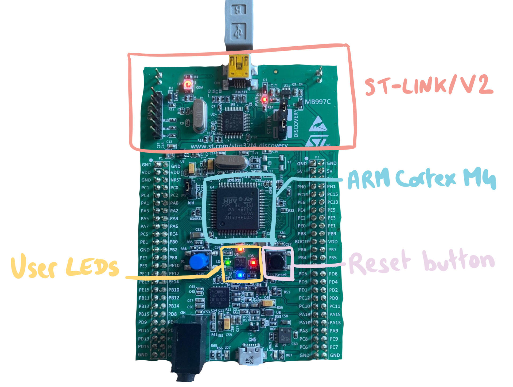
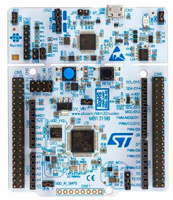
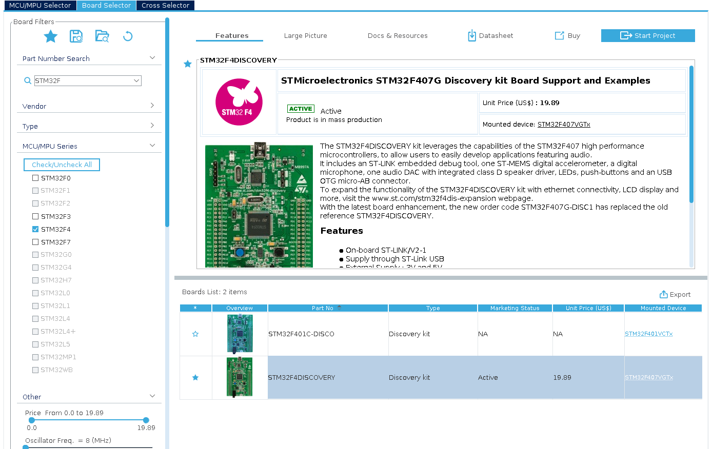
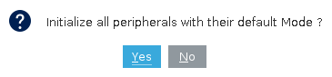
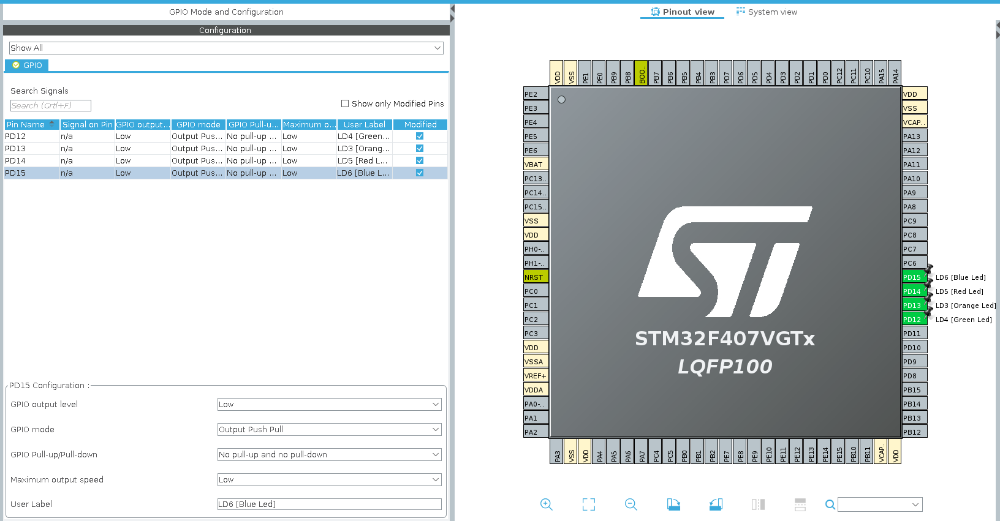
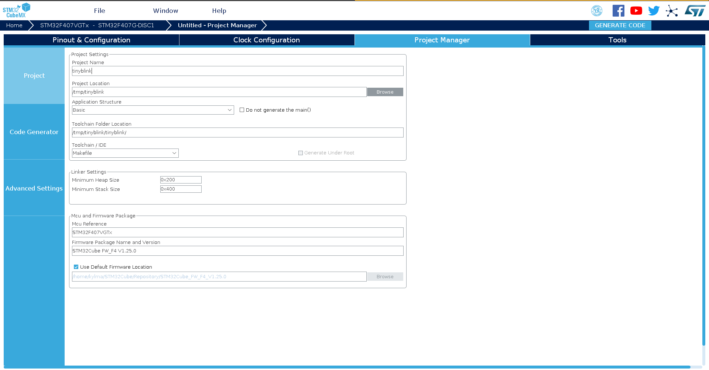
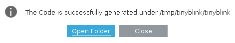

Getting Started With The STM32F4Discovery
These are my notes on how to setup a development environment for this board, mostly based on these resources:
- How to compile and burn the code to STM32 chip on Linux
- Mastering STM32 by Carmine Noviello
- How to build a “Blink LED” project from STM32CubeMX for ST/Atollic TrueSTUDIO® for STM32™
We’ll talk about how to setup the environment and write the Hello World! of the embedded world: a program that blinks a LED (or several).
The Hardware
The STM32F4Discovery is an inexpensive development board I got a while ago… 3 years or something like that? It’s been collecting dust forever!
The board has the following stuff:
- STM32F407VGT6 ARM Cortex-M4 microcontroller, 1 Mbyte of Flash memory and 192 Kbyte RAM
- a 3-axis ST-MEMS digital accelerometer
- 4 user LEDs
- two push buttons: reset and a user defined
- a digital microphone and an audio DAC
- a ST-LINK/V2 embedded debugger

The part number for this board is STM32F407G-DISCOVERY but it was retired in favor of the STM32F407G-DISC1. The main difference is that the newer STM32F407G-DISC1 has a ST-LINK/V2-A.
The best part about this board is that it’s actually composed of 2 parts:
- the dev board with the STM32
- a ST-LINK/V2 debugger/programmer
This design choice was made more obvious with the next series of board, for example on the Nucleo, you can snap the board in two to separate them.

These documents might be handy at some point, let’s keep them nearby:
- UM1472 User manual - Discovery kit with STM32F407VG MCU
- RM0090 Reference Manual - STM32F407 advanced Arm®-based 32-bit MCUs
- Datasheet - STM32F407xx
The Software Side
When you get started on embedded programming, it’s super easy to get lost in all the available options for software, toolchains, libraries, IDEs and more… And that’s exactly what I did!
~~ A couple of hours later, because I just had to compare all the things in the world ~~
In the end, it boils down to:
- a library (no one wants to recode LED_toggle again and again)
- a compiler that can do ARM binaries
- something to build your project
- something to flash your compiled binary on the board
Now, you can have all of those included in one big thing like an IDE, these are the main ones:
- TrueStudio by ST
- OpenSTM32
- MDK ARM by Keil
Or you can pick and choose each component individually. I’m not a huge fan of IDEs, as they hide too much of the magic happening behind the scenes.
Since I’m doing this to learn, we are going for a barebones installation, with components that I understand:
- STM32CubeMX to generate the project (startup code, linker script, Makefile, main function and libraries installation)
- A library: I’m going with the STM32Cube library which comes with STM32CubeMX. A popular alternative is
libopencm3which is open source and works on a bunch of Cortex. - a cross compiling toolchain: ie a GCC that can do ARM binaries
- stlink to program the board. Alternatives to stlink: openocd or STM32CubeProg
- a good old Makefile to build a project
On Archlinux, you can install gcc-arm-none-eabi and stlink from the community repository:
sudo pacman -S arm-none-eabi-gcc stlink
And STM32CubeMX is available in AUR:
yay -S stm32cubemx
Bootstrapping The Project
STM32CubeMX is a GUI tool used to bootstrap our tinyblink project, it will do all the boring stuff for us:
- Generate a new project for a variety of toolchains, here we will go with a traditional Makefile
- Generate a configuration for the STM32 microcontroller (What communications interface do you want to enable? What role should have this pin?)
- Download libraries
- Generate the C code for hardware initialization and the main function
See UM1718 User manual - STM32CubeMX for STM32 configuration and initialization C code generation for the full details.
Okay, now run STM32CubeMX and click access to the board selector:
Part number is STM32F4DISCOVERY, so let’s search for that:

Then hit “start project” in the top-right corner.
In the next pop-up, answer No, we’ll only blink a LED, we just need access to the GPIOs, no need to add I2C/SPI/USB OTG to the project :p

You should land on the Pinout view. By defaults, all GPIOs will still be configured, clear all pinouts with Ctrl-P. In the pinout view, click on each pin (for example PD12) and select GPIO Output. You can leave the default settings and just add a User Label for each PIN:
| PIN | User Label |
|---|---|
| PD12 | LD4 [Green Led] |
| PD13 | LD3 [Orange Led] |
| PD14 | LD5 [Red Led] |
| PD15 | LD6 [Blue Led] |

In the Project Manager tab:
- change the toolchain to
Makefile - fill in the Project Name and the Project Location

When you’re done, click generate code in the top right hand corner.
If you don’t have it already, the firmware package (here STM32Cube_FW_F4_V1.25.0) will be downloaded.

Coding the Code
Let’s have a look at the generated Code then ~~
$ tree -L 2 tinyblink
├── Drivers
│ ├── CMSIS
│ └── STM32F4xx_HAL_Driver
├── Inc // this is where the includes live
│ ├── main.h
│ ├── stm32f4xx_hal_conf.h
│ └── stm32f4xx_it.h
├── Makefile
├── Src // source code goes here
│ ├── main.c
│ ├── stm32f4xx_hal_msp.c // MSP=MCU support package, peripheral system-level initialization (clock, GPIO, DMA, interrupts)
│ ├── stm32f4xx_it.c // interrupt service routines
│ └── system_stm32f4xx.c
├── startup_stm32f407xx.s // vector table directly coded in assembly
├── STM32F407VGTx_FLASH.ld // linker script defines heap/stack size and location
└── tinyblink.ioc
5 directories, 11 files
The whole project is available on https://github.com/shiny-labs/STM32F407VGT6 to check the code from there.
Open Src/main.c and navigate to the main() function: (I removed some of the USER CODE comments for clarity)
/**
* @brief The application entry point.
* @retval int
*/
int main(void)
{
/* MCU Configuration--------------------------------------------------------*/
/* Reset of all peripherals, Initializes the Flash interface and the Systick. */
HAL_Init();
/* Configure the system clock */
SystemClock_Config();
/* Initialize all configured peripherals */
MX_GPIO_Init();
/* Infinite loop */
while (1)
{
/* USER CODE END WHILE */
/* USER CODE BEGIN 3 */
}
}
Our GPIOs are initialized in the MX_GPIO_Init function:
/*Configure GPIO pins : LD4_Pin LD3_Pin LD5_Pin LD6_Pin
Audio_RST_Pin */
GPIO_InitStruct.Pin = LD4_Pin|LD3_Pin|LD5_Pin|LD6_Pin
|Audio_RST_Pin;
GPIO_InitStruct.Mode = GPIO_MODE_OUTPUT_PP;
GPIO_InitStruct.Pull = GPIO_NOPULL;
GPIO_InitStruct.Speed = GPIO_SPEED_FREQ_LOW;
HAL_GPIO_Init(GPIOD, &GPIO_InitStruct);
Now, locate the while loop in the main() function. This is where we will add code!
while (1)
{
/* USER CODE END WHILE */
/* USER CODE BEGIN 3 */
}
Next, we will invoke the function HAL_GPIO_TogglePin from the HAL library, defined in Drivers/STM32F4xx_HAL_Driver/Src/stm32f4xx_hal_gpio.c
/**
* @brief Toggles the specified GPIO pins.
* @param GPIOx Where x can be (A..K) to select the GPIO peripheral for STM32F429X device or
* x can be (A..I) to select the GPIO peripheral for STM32F40XX and STM32F427X devices.
* @param GPIO_Pin Specifies the pins to be toggled.
* @retval None
*/
void HAL_GPIO_TogglePin(GPIO_TypeDef* GPIOx, uint16_t GPIO_Pin)
{
/* Check the parameters */
assert_param(IS_GPIO_PIN(GPIO_Pin));
if ((GPIOx->ODR & GPIO_Pin) == GPIO_Pin)
{
GPIOx->BSRR = (uint32_t)GPIO_Pin << GPIO_NUMBER;
}
else
{
GPIOx->BSRR = GPIO_Pin;
}
}
And we can use the constants auto-generated in Inc/main.h:
/* Private defines -----------------------------------------------------------*/
#define LD4_Pin GPIO_PIN_12
#define LD4_GPIO_Port GPIOD
#define LD3_Pin GPIO_PIN_13
#define LD3_GPIO_Port GPIOD
#define LD5_Pin GPIO_PIN_14
#define LD5_GPIO_Port GPIOD
#define LD6_Pin GPIO_PIN_15
#define LD6_GPIO_Port GPIOD
Remember when I said we were going to blink one LED? I lied. We’re blinking the 4 LEDs available on the board. So our while loop from earlier looks like:
while (1)
{
/* USER CODE END WHILE */
HAL_GPIO_TogglePin(LD4_GPIO_Port, LD4_Pin);
HAL_GPIO_TogglePin(LD3_GPIO_Port, LD3_Pin);
HAL_GPIO_TogglePin(LD5_GPIO_Port, LD5_Pin);
HAL_GPIO_TogglePin(LD6_GPIO_Port, LD6_Pin);
HAL_Delay(200);
/* USER CODE BEGIN 3 */
}
Building
Build the project with:
$ make
Makefile:119: *** missing separator. Stop.
Oopsie, something’s gone wrong with the magically generated Makefile!
# C includes
C_INCLUDES = \
-IInc \
-IDrivers/STM32F4xx_HAL_Driver/Inc \
-IDrivers/STM32F4xx_HAL_Driver/Inc/Legacy \
-IDrivers/CMSIS/Device/ST/STM32F4xx/Include \
-IDrivers/CMSIS/Include
-IDrivers/CMSIS/Include
Remove the offending duplicated line and try again!
A new directory appears!
$ tree build
build
├── main.d
├── main.lst
├── main.o
[...] // a bunch of .d, .lst and .o
├── tinyblink.bin
├── tinyblink.elf
├── tinyblink.hex
└── tinyblink.map
The .elf is an ARM binary:
$ file build/tinyblink.elf
build/tinyblink.elf: ELF 32-bit LSB executable, ARM, EABI5 version 1 (SYSV), statically linked, with debug_info, not stripped
And the .bin is the whole firmware that we will flash:
$ file build/tinyblink.bin
build/tinyblink.bin: data
Flashing
To transfer our new firmware into the microcontroller, let’s use the ST-LINK/V2 programmer embedded in the board along with the stlink software.
You should have this when plugging in the mini USB cable:
$ lsusb
[...]
Bus 002 Device 019: ID 0483:3748 STMicroelectronics ST-LINK/V2
Check that the st-info command finds your programmer correctly:
$ sudo st-info --probe
Found 1 stlink programmers
serial: 303030303030303030303031
hla-serial: "\x30\x30\x30\x30\x30\x30\x30\x30\x30\x30\x30\x31"
flash: 1048576 (pagesize: 16384)
sram: 196608
chipid: 0x0413
descr: F4xx
Bonus: the COM LED should blink in red/green.
Flash a program:
$ st-flash write build/tinyblink.bin 0x8000000
st-flash 1.6.1
2020-07-05T09:16:34 INFO common.c: F4xx: 192 KiB SRAM, 1024 KiB flash in at least 16 KiB pages.
file build/tinyblink.bin md5 checksum: 4a434ae6f8dbbed7bc6172c11acedbd, stlink checksum: 0x000604bc
2020-07-05T09:16:34 INFO common.c: Attempting to write 4276 (0x10b4) bytes to stm32 address: 134217728 (0x8000000)
EraseFlash - Sector:0x0 Size:0x4000 2020-07-05T09:16:34 INFO common.c: Flash page at addr: 0x08000000 erased
2020-07-05T09:16:34 INFO common.c: Finished erasing 1 pages of 16384 (0x4000) bytes
2020-07-05T09:16:34 INFO common.c: Starting Flash write for F2/F4/L4
2020-07-05T09:16:34 INFO flash_loader.c: Successfully loaded flash loader in sram
enabling 32-bit flash writes
size: 4276
2020-07-05T09:16:35 INFO common.c: Starting verification of write complete
2020-07-05T09:16:35 INFO common.c: Flash written and verified! jolly good!
If you have the Flash written and verified! jolly good! , then you are good to go.
Testing
Hit the reset button on your board (the black one)!
Victory /o/ That’s all for today, stay safe gentlepeople.